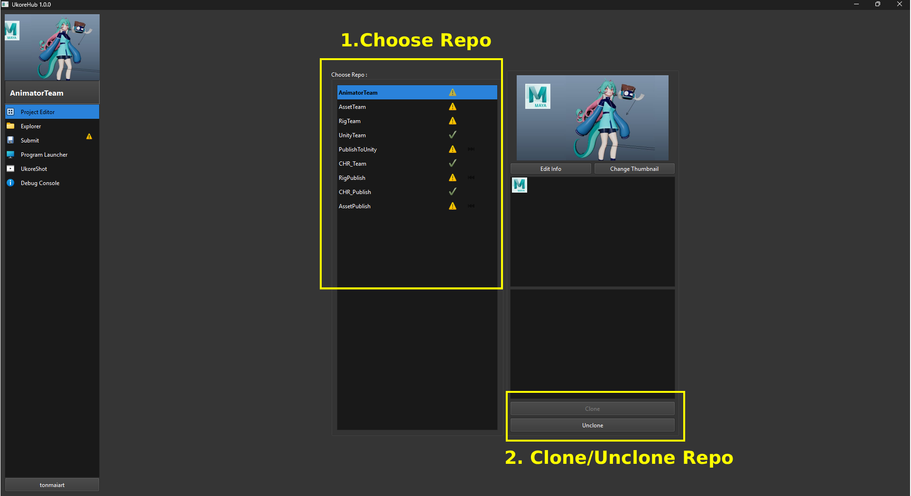

Project Editor¶

เป็นหน้าสำหรับเลือก Repositories ที่เราจะทำงาน โดยแต่ละ Repositories ก็จะแบ่งแยกไปตามลักษณะงาน เช่น Animator ก็จะทำงานใน Repo ที่ชื่อ AnimatorTeam , ฝ่าย Assets ก็จะทำงานใน Repo ที่ชื่อ AssetTeam เป็นต้น
โดยส่วนประกอบต่างๆ จะมีดังนี้
1. Choose Repo¶
แสดงรายการ Repositores ที่เราต้องการจะทำงาน ให้เราเลือก
2. ปุ่ม Clone/ Unclone¶
-
กด Clone จะเป็นการดึงข้อมูลไฟล์ทั้งหมดของ Repositorie นั้นลงมาบนเครื่อง ให้กดเมื่อต้องการจะทำงานใน Repo นั้นครั้งแรก ครั้งเดียว
-
กด Unclone จะเป็นการลบข้อมูลของ Repositorie นั้นออกจากเครื่อง ให้กดเมื่อโปรเจคสิ้นสุดลง หรือไม่ได้ทำงานใน Repo นั้นอีก
หมายเหตุ :
- การ Clone บาง Repo อาจจะมีการพึ่งพา Repo ตัวอื่นๆ ซึ่งจะขึ้นเป็น Dialogue แจ้งเตือน ให้ผู้ใช้กด Confirm ได้เลย
- หากจะกด Unclone ให้เช็คใน Submit Tab ว่างานที่แก้ไขไว้ถูกส่งงาน Commit ขึ้นไปเรียบร้อยแล้ว ไม่เช่นนั้นจะสูญเสียการแก้ไขชิ้นงานนั้นทั้งหมด